-
 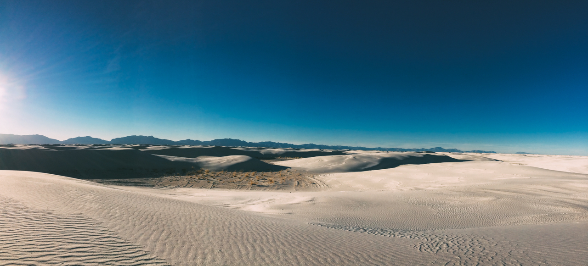
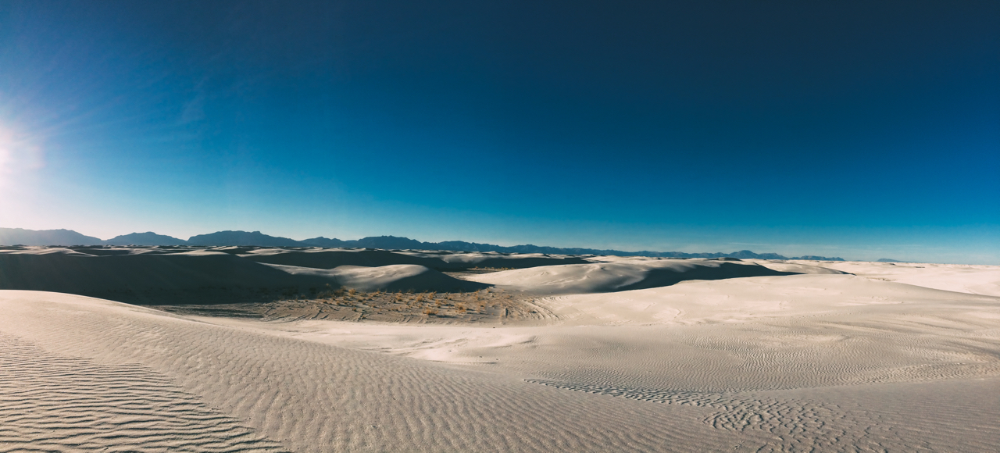White Sands National Monument
The White Sands National Monument is a large expanse of rolling dunes. The sand is entirely white composed of gypsum crystals. The area was formed when a large body of water dried up. Normally when this happens the gypsum crystals flow into the ocean. However because this basin is entirely landlocked the gypsum deposits were left. Over time wind formed the dunes.
tip: Check the website before going. The area around the White Sands National park is used for testing missiles by the Air Force. When tests occur they shut down the park along with the only road leading to the park.
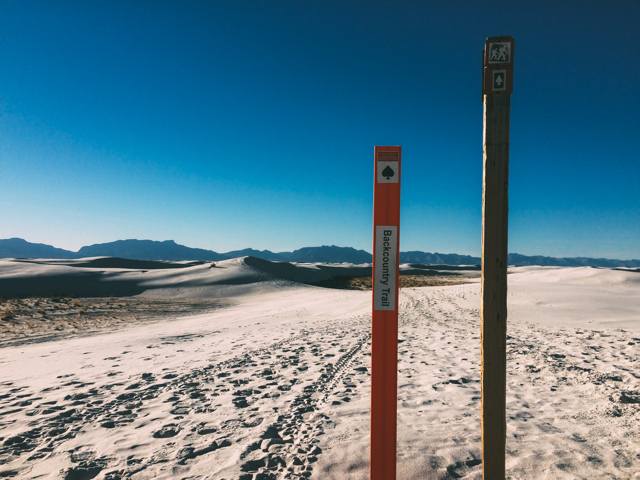There are several areas to park and explore the dunes. We took the Back Country Trail. This 1 mile loop takes you far enough into the dunes that you start to feel lost in a sea of sand. If not for the trail markers you could easily get lost but that's not necessarily a bad thing.
tip: You can rent sleds from the gift shop and sled down the dunes on your hike.
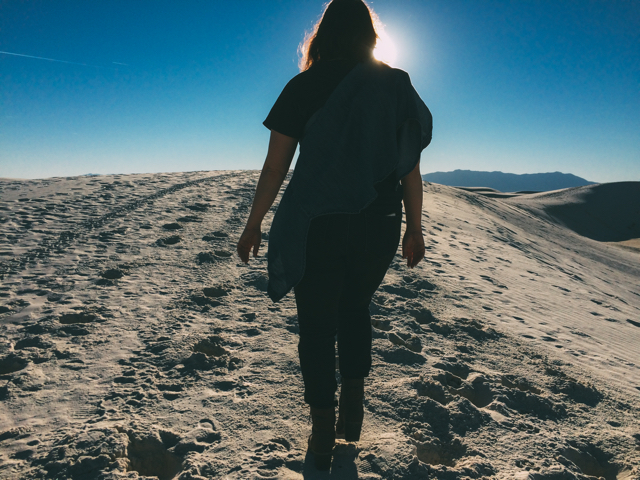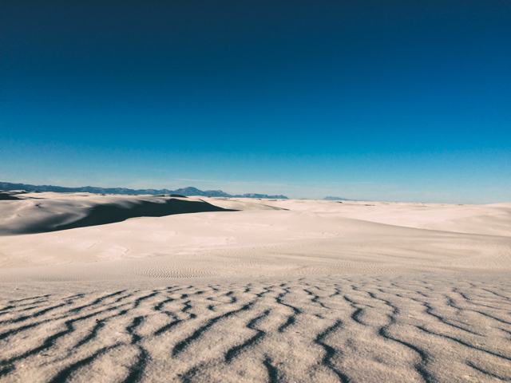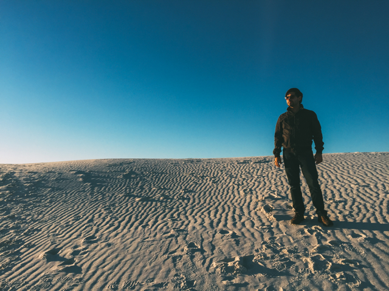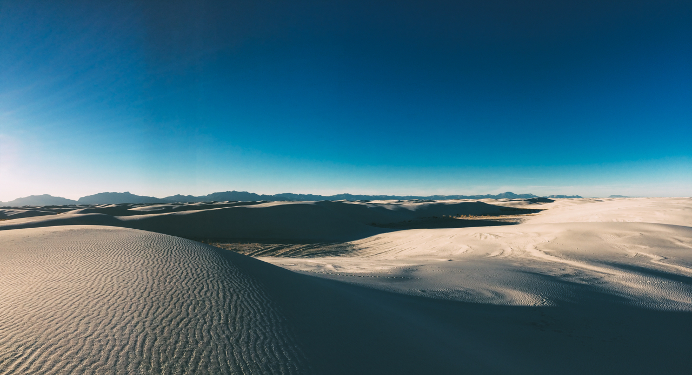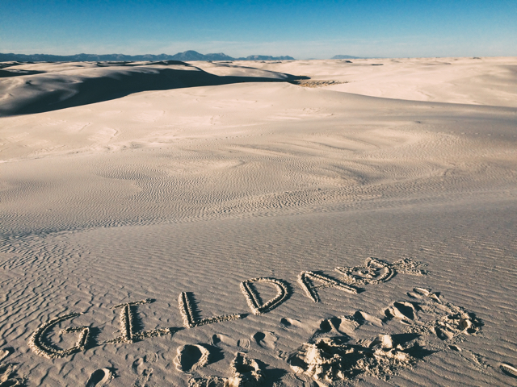Every so often you will see words in the sand. We left one of our own. Gilda is our cat.
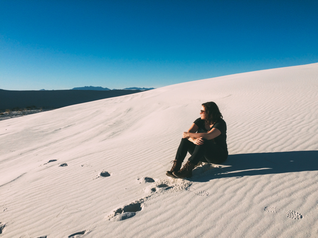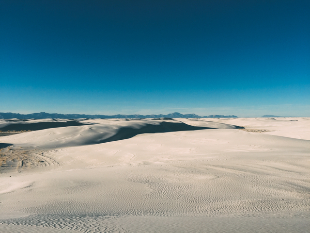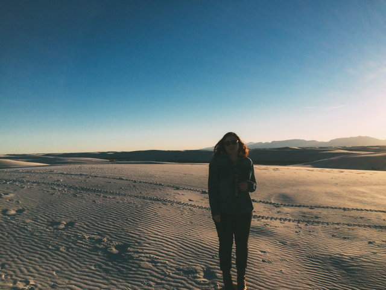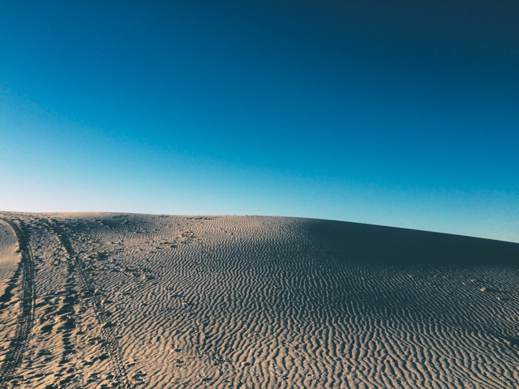The White Sands is a large expanse. When you are in the middle all you can see is dunes. In the pictures below Chuck ran out to one of the dunes. On the second picture you can see him on top of a dune. A little spec in the middle of the picture.
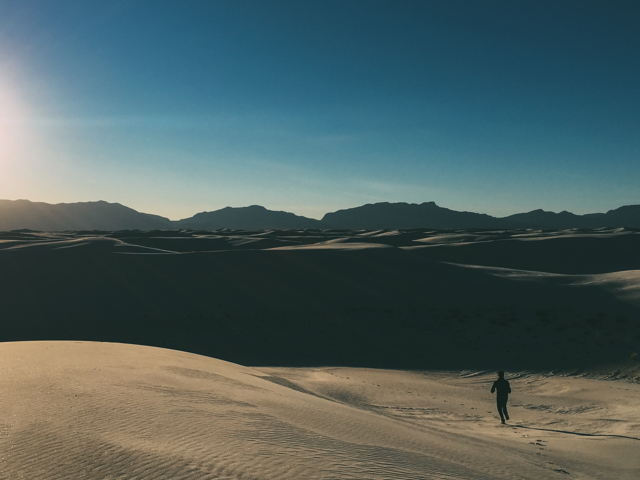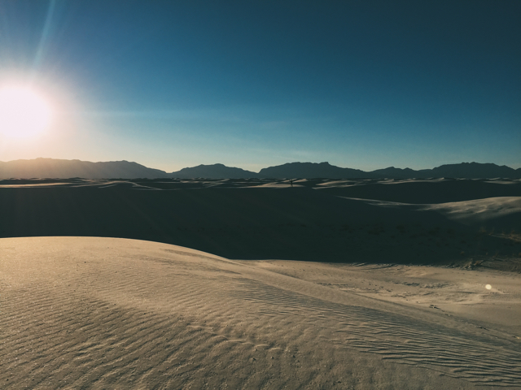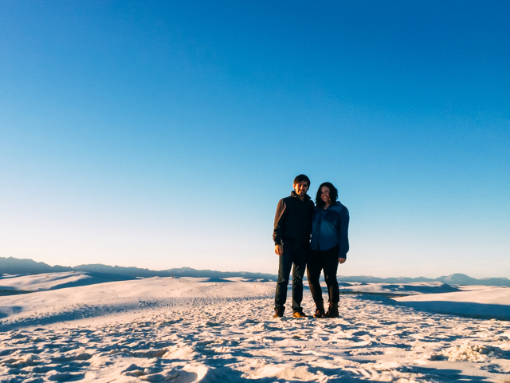